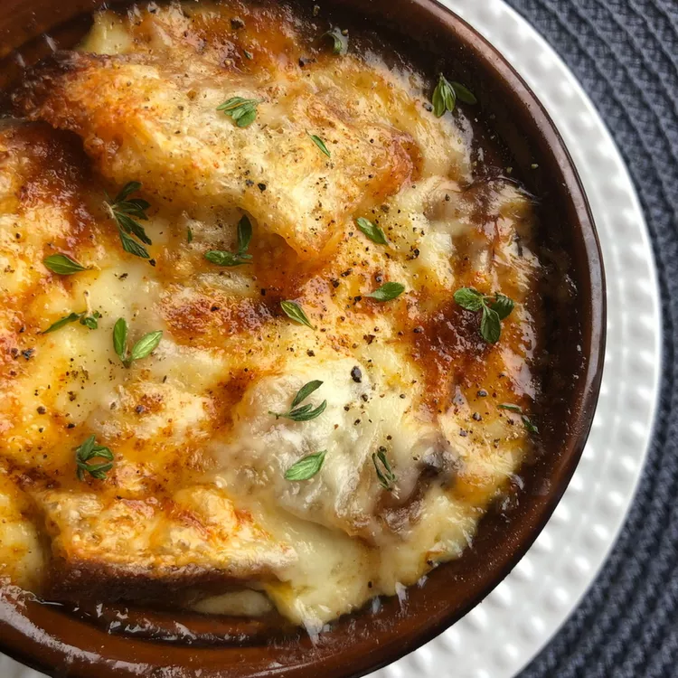

French Onion Soup Gratinee

Description
This is the best French onion soup recipe I know. I have been making it for 30 years and it never fails to please. It makes an exquisite presentation too!
Ingredients
- 4 tablespoons butter
- 2 large red onions, thinly sliced
- 1 teaspoon salt
- 1 (48 fluid ounce) can chicken broth
- 1 (14 ounce) can beef broth
- ½ cup red wine
- 1 tablespoon Worcestershire sauce
- 2 sprigs fresh parsley
- 1 sprig fresh thyme leaves
- 1 bay leaf
- 1 tablespoon balsamic vinegar
- salt and freshly ground black pepper to taste
- 4 thick slices French bread
- 8 slices Gruyère cheese, at room temperature
- ½ cup shredded Asiago cheese, at room temperature
- 4 pinches paprika